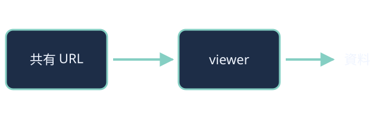

URL を渡して読んでもらう
静的な HTML のスライドを、そのまま共有 URL で配ります。
→ / Space / スワイプで次へ
作者がすること
- リポジトリにスライドを置く
- GitHub Actions が Slide へ送る
- 管理画面で確かめて一般公開する
- 共有 URL をコピーして渡す
読者がすること

アカウントもアプリも要りません。スマートフォンでも PC でも開けます。
資料はそのまま動く
相対パス・root 相対パスの CSS や画像、module script を、作者が書いたとおりに読み込みます。
このページの番号:
おわり
補足は 付録 にあります。